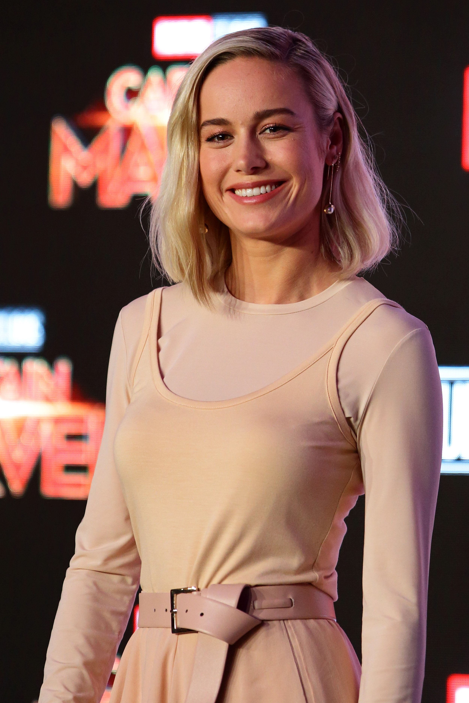

Biografía
Brianne Sidonie Desaulniers, más conocida como Brie Larson, es una actriz, cantante, directora, productora, guionista, modelo y youtuber estadounidense.
Es ganadora, entre otros, del premio Óscar, Globo de Oro, SAG y BAFTA a la mejor actriz, además de un premio Primetime Emmy como productora.
Brie fue educada en su casa antes de estudiar interpretación en el American Conservatory Theater. Comenzó su carrera como actriz en televisión, apareciendo como habitual en la comedia de 2001 Raising Dad,
por la que fue nominada para un Young Artist Award.
Puso en marcha su carrera musical en 2005, con el lanzamiento de su único disco Finally Out of P.E. Su actuación en la comedia Hoot (2006) fue elogiada,
y posteriormente interpretó papeles secundarios en las películas Greenberg (2010), Scott Pilgrim vs. The World (2010) y 21 Jump Street (2012).
Su consagración llegó en 2015, con su actuación en La habitación, un aclamado drama basado en la novela homónima de Emma Donoghue, en donde interpretaba a Joy «Ma» Newsome
y que le hizo ganar varios premios de interpretación como el Óscar, el Globo de Oro, el Premio de la Crítica Cinematográfica, el Premio SAG, el BAFTA y el Premio Independent Spirit.
Larson ha escrito y dirigido dos cortometrajes, The Arm (2012) y Weighting (2013). También ha participado en una producción teatral en el Festival de Teatro de Williamstown.
Tuvo su debut como directora de cine en 2019 con la comedia Unicorn Store, la cual también protagonizó junto a Samuel L. Jackson.
